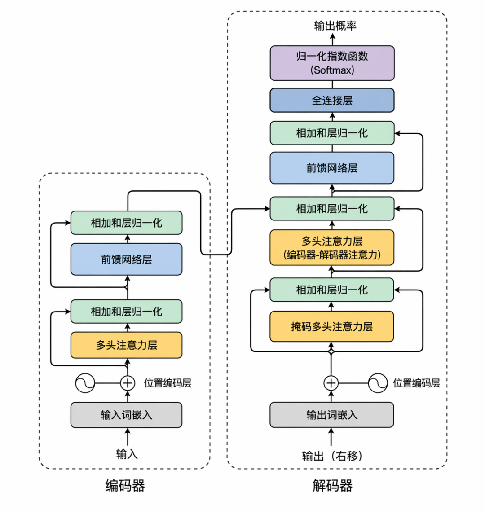
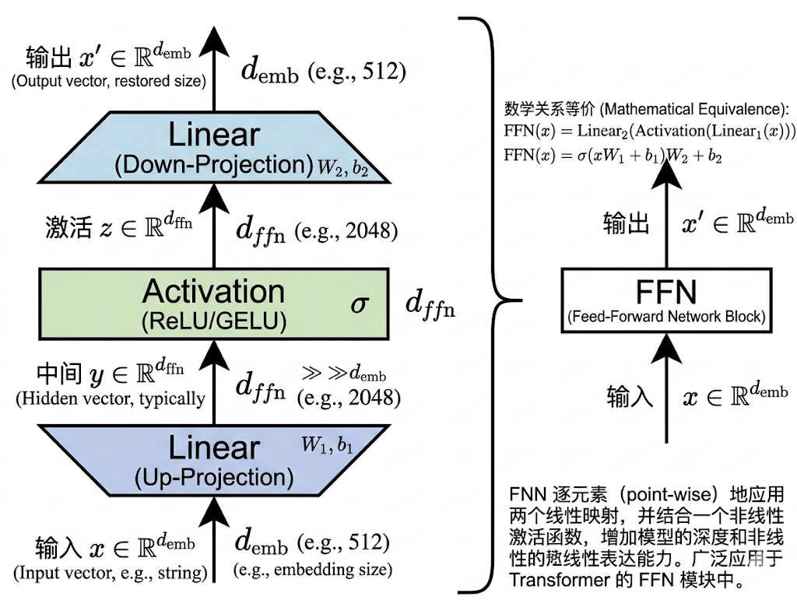
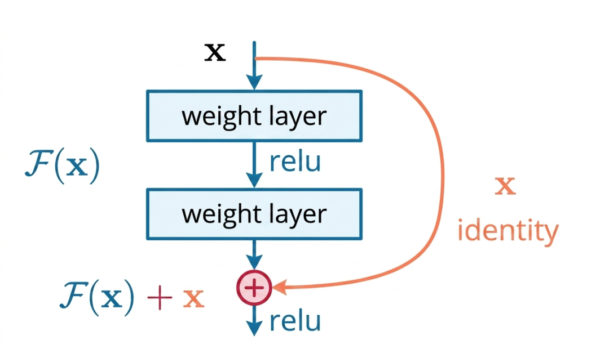
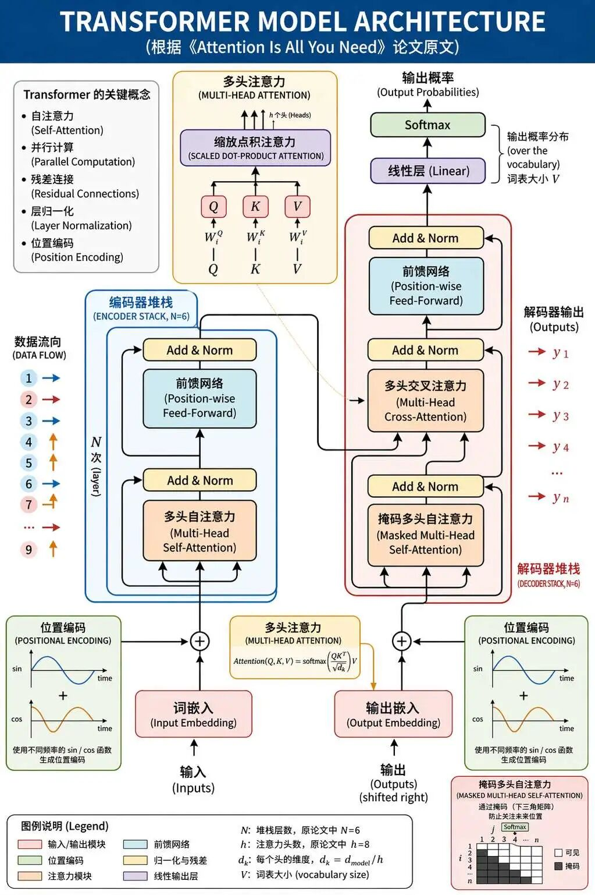

Transformer（一）
"深度学习的下一步是学会思考，而不仅仅是统计。"-2017年NIPS大会演讲者&诺贝尔物理学奖&图灵奖获得者&深度学习之父Geoffrey Hinton
从三万年前洞穴壁画中的符号刻痕，到美索不达米亚楔形文字的系统化记录，人类始终在寻求突破时空限制的沟通方式。
三千年前，商朝贞人在炙热的龟甲上刻下「雨」「禾」「征」的裂痕，这些甲骨文不仅是汉字的源头，更是人类最早将抽象概念固化为符号的史诗。当殷人以「龟兆」解读天命时，他们或许未曾想到，这种对符号与意义的执念将跨越三千年，最终在人工智能的矩阵中重生。
1950年图灵测试的提出，将"机器能否理解语言"这一哲学命题转化为可验证的科学目标，催生了早期对话系统的萌芽：
1966年，西方人ELIZA，以模式匹配模仿心理医生对话，却无法理解"银行"与"河岸"的语义歧义，如同"提线木偶"般受限于工程师预设的脚本
2001年，SmarterChild通过关键词检索实现即时聊天，却在"帮我推荐餐厅"的请求中陷入逻辑混乱，暴露统计模型缺乏语义连贯性的致命缺陷
这些系统背后是两大认知桎梏：符号主义的僵化规则无法应对语言的多义性，统计学习的局部关联性难以捕捉长距离上下文的逻辑。正如维特根斯坦所言："语言的游戏规则永远在动态生成"，早期AI的困境本质是对语言动态性的误读。
"嘿，Siri"，
"你好，我在！"
随着一声"嘿，Siri！"，LSTM网络与注意力机制为机器理解语言注入了新动能但，却仍受困于架构瓶颈：
2014年Seq2Seq模型在机器翻译中引入注意力机制，但基于RNN的串行计算使训练效率低下，处理《百年孤独》开篇的跨世纪叙事时，模型像"老年痴呆症"患者般丢失关键信息
2016年Google神经翻译虽实现端到端学习，但其注意力权重矩阵在长文本中呈指数级膨胀，翻译《战争与和平》时GPU显存瞬间爆裂，暴露算力与架构的双重局限
这一时期的技术犹如"带着镣铐的舞者"--LSTM的时序依赖限制了并行化潜力，注意力机制沦为RNN的辅助工具。产业界在算力与模型规模的军备竞赛中，亟待一场颠覆性的架构革命。
不在沉默中爆发就在沉默中死亡，2017年，Google论文《Attention Is All You Need》犹如黑夜中投向AI界的一枚"思想核弹"，它开启了一个新智能时代。
从 GPT-2、LLaMA、Claude、Qwen，到 DeepSeek 等模型的持续演进，Transformer 已经成为大模型时代最核心的技术底座。
正如古代中国印刷术的发明重构了知识传播，Transformer正在重塑智能生产的底层逻辑。它不仅是AI史上的分水岭，更是人类文明迈向人机共生的里程碑。
Transformer入门
Bahdanau注意力机制虽首次为Seq2Seq模型引入动态上下文向量，但其底层仍受限于RNN的串行处理模式：
1、固定编码压缩：传统Seq2Seq将输入序列压缩为单一静态向量，导致长序列关键信息丢失。例如翻译《战争与和平》时，重要人物关系易被忽略。
2、注意力依附RNN：Bahdanau注意力权重计算需依赖RNN的隐藏状态，而RNN的梯度消失问题使长距离依赖建模困难。其动态上下文向量本质仍是RNN输出的加权平均，未完全突破信息瓶颈。

而transformer，则完全摒弃了原来的RNN的结构，它采用了一种基于编码-解码模型的自注意力机制。
Transformer的结构
我们先不终点看论文原文中的结构图，也不看网络上流行的结构图，而是看我下面画的这两个简化图：
1）编码器示意图
输入嵌入 + 位置编码
|
v
+-----------------+
| 多头自注意力 |
+-----------------+
|
v
+-----------------------+
| 残差连接 + 层归一化 |
+-----------------------+
|
v
+-----------------+
| 前馈神经网络 |
+-----------------+
|
v
+-----------------------+
| 残差连接 + 层归一化 |
+-----------------------+
|
v
(重复以上层数次)
2）解码器示意图
输入嵌入 + 位置编码
|
v
+---------------------+
| 掩码多头自注意力 |
+---------------------+
|
v
+-----------------------+
| 残差连接 + 层归一化 |
+-----------------------+
|
v
+---------------------------+
| 编码器-解码器注意力 |
+---------------------------+
|
v
+-----------------------+
| 残差连接 + 层归一化 |
+-----------------------+
|
v
+---------------------+
| 前馈神经网络 |
+---------------------+
|
v
+-----------------------+
| 残差连接 + 层归一化 |
+-----------------------+
|
v
(重复以上层数次)
Transformer结构由编码器-解码器构成，我们可以左右比对一下，发现编码器和解码器非常的像，它们有共同的结构：输入位置+位置编码、前馈神经网络、残差连接+层归一化。
编解码器的相同结构

但二者也存在关键不同：编码器只有 多头自注意力机制，而解码器除了 多头注意力机制外，还有掩码多头自注意力机制，编码器-解码器注意力机制。我们先来研究它们的相同结构。
输入层
首先是输入层的结构，编码器和解码器拥有相同的输入层结构。
输入层的核心就是输入Embedding，它是模型处理序列数据的第一步，其核心由词嵌入（Word Embedding） 和位置编码（Positional Encoding） 组成。

1）词嵌入（Word Embedding）
大家应该还记得我们之前学习过的Word2Vec，这就是词嵌入的起源，将词(word)转为向量(vector )，向量并不神秘，你就理解成每个词都有"编号"，本质就是一组数字：
- "猫" -> [0.1, 0.2, -0.3, 0.4]
- "鱼" -> [-0.2, 0.6, 0.1, -0.5]
2）位置编码
由于transformer抛弃了RNN这种按序列处理的循环结构，在同时处理："追"、"猫"、"狗"这三个词的时候，既有可能被看作"猫追狗"，也有可能看作"狗追猫"，所以就需要给这些词一个顺序编号。如第1个词、第2个词....生成独特的数字编码，类似"座位号"。
前馈神经网络
第二个相同的结构是前馈神经网络，前馈神经网络又简称FNN，它是由激活函数，及激活函数的前后两个线性层组成，可以看下面的示意图：

激活函数在原始 Transformer 论文中使用的是 ReLU，后续大量变体中也常见 GELU、SwiLU 等。
自注意力机制本质是线性加权求和，而 FFN 通过非线性变换进一步加工每个位置上的表示，使模型能拟合更复杂的函数，充实和丰富了Transformer的表达能力。
残差连接
残差连接在编码器和解码器中都至关重要，大模型的训练过程中比小模型会更容易出现梯度爆炸和梯度消失的问题，深层网络训练时，梯度通过链式法则反向传播易衰减或爆炸。残差连接通过"输入+子层输出"的短路路径（Shortcut Path），允许梯度直接回传至浅层，确保深层参数有效更新。

残差连接不仅能缓解梯度爆炸/消失的问题，它可以强制模型仅学习输入与输出的差异（残差），而非完整映射，避免因多层叠加导致原始特征，如位置编码被过度修改。
多头自注意力机制
然后是在transformer中发挥了革命性作用的多头注意力机制，不同于传统注意力（Bahdanau/Luong），Seq2Seq任务更加关注编码器与解码器之间的跨序列对齐，Transformer的自注意力机制更专注于同一序列内的全局交互，如句子内单词间依赖、段落的首尾词的关联关系，直接建立长距离上下文关系。
其次Transformer自注意力机制还有另外一个特点，它是多头的，也就是同时具备多个自注意力模块，叫做多头自注意力机制，这种设计的好处在于允许模型同时关注不同语义子空间，例如语法结构、语义角色、指代关系，输出更加丰富的表示。
这种设计直接颠覆了RNN按序列逐一处理的低效性，对比同时期的LSTM模型，训练和推理效率提升了10倍以上。
编解码器的不同结构
再来说说编解码器的不同之处，首先是掩码自注意力机制，它是解码器独有的结构。
掩码自注意力机制
顾名思义，掩码自注意力机制和自注意力机制的区别就在于训练的时候，后者允许序列中所有位置的词元互相查看（双向），例如句子中的每个词都能参考前后所有词的信息，从而捕捉全局依赖关系。这种设计适合需要整体理解的任务，如文本分类、语义编码。
而前者会通过 掩码矩阵来 遮挡未来词元信息（比如生成第3个词时，只能看到前2个词），强制模型仅依赖已生成内容。这种单向限制确保生成任务（如翻译、文本生成）时不会"偷看"未生成的答案，保证逻辑连贯性。
如果还不好理解，可以姑先且这么理解：
- "普通自注意力"就像读书时随便翻页看前后内容，所有词都能互相参考，比如理解"苹果"时能同时看前面的"吃"和后面的"甜"，适合分析整个句子；
- "掩码自注意力"则是写作文时蒙住后面的空白纸，写到哪里只能参考前面已写的内容，比如先写"我"，再写"吃"时只能看"我"，防止作弊偷看未来信息，保证生成连贯
编码-解码自注意力机制
首先要注意，这也是解码器独有的结构。它是解码器中的核心模块，它充当了一个桥梁的作用，目标是让解码器-Decoder在生成目标序列的每个词时，能够灵活地"查阅"编码器-Encoder输出的源序列信息，并动态选择最相关的部分进行融合。例如，在翻译"I love apples"为中文时，生成"苹果"一词时，模型会通过该机制聚焦源序列中的"apples"位置。
这种动态对齐特性使得模型能够像人类翻译一样，在生成目标语言时"回头看"源语言的关键部分，从而实现了从"词对词替换"到"语义整体迁移"的跨越。
Transformer工作流程

详细示例：以句子"Lily拿着苹果手机吃苹果？她说苹果真好__"的续写任务说明
一、编码器处理阶段
1. 输入嵌入 (Input Embedding)
输入嵌入层的作用是将句子中的每个词（token）转换成一个高维向量（例如512维，即 $d_{model}$=512）。
- （1）首先，模型有一个可学习的词表查询矩阵。对于输入句子，首先将其划分为token，例如 ["Lily", "拿着", "苹果手机", "吃", "苹果"]。
- （2）然后每个token根据其在词表中的索引，被映射为一个密集的向量表示。例如，"苹果"这个词会被映射为一个初始的向量表示，比如 [0.1, -0.2, 0.5, ...]（维度为512）。
最终将离散的符号（文字）转换为模型可以处理的数值形式，初始向量包含了词语的语义信息。
2. 位置编码 (Positional Encoding)
位置编码的作用是为每个词的向量添加位置信息，因为Transformer的自注意力机制本身不包含顺序信息。
- （1）首先使用正弦和余弦函数生成一组独特的位置编码向量，这些向量与词嵌入向量的维度相同。
- （2）例如，位置0（"Lily"）有一个独特的编码 $PE_0$，位置3（第一个"苹果"在"苹果手机"中）有 $PE_3$，位置4（第二个"苹果"在"吃苹果"中）有 $PE_4$。
- （3）然后将每个词的位置编码向量与其词嵌入向量直接相加：输入表示 = 词嵌入 + 位置编码。
这样最终可以让模型明确知道每个词在序列中的具体位置，从而理解"Lily拿着苹果手机"和"手机拿着Lily苹果"这种顺序差异带来的语义变化。
3. 多头自注意力层 (Multi-Head Self-Attention)
这是编码器最核心的环节，用于让序列中的每个词都能与其他所有词进行"全局沟通"，从而根据上下文动态调整自身的表示。
- 生成Q, K, V：每个词的输入向量会通过三组不同的可学习权重矩阵进行线性变换，生成三个新的向量：查询(Query)、键(Key) 和值(Value)。
- 计算注意力分数：对于某个词（例如"吃苹果"中的"苹果"），它的Query向量会与序列中所有词（包括自己）的Key向量进行点积计算，得到一个分数。这个分数表示"吃苹果"中的"苹果"与句中其他词的关联程度。
- 缩放与Softmax：将这些分数除以一个缩放因子（通常是Key向量维度的平方根，如√64=8），防止点积结果过大。然后通过Softmax函数将这些分数归一化为权重（总和为1）。
- 加权求和输出：用上一步得到的权重对所有词的Value向量进行加权求和。权重高的Value向量对最终输出的贡献更大。这个加权和就是自注意力机制为"吃苹果"中的"苹果"生成的新向量表示，它现在融入了相关的上下文信息。
- "多头"机制：上述过程会并行进行多次（例如8次，即8个"头"）。每个头都有自己独立的Q、K、V变换矩阵，因此可以学习关注不同方面的上下文信息。例如，一个头可能专门关注"吃"和"苹果"的动宾关系，另一个头可能关注"苹果手机"和"苹果"的潜在歧义消除。最后，所有头的输出会被拼接起来，再通过一个线性层整合，形成最终的多头自注意力输出。
4. 残差连接与层归一化 (Add & Norm)
残差连接 (Add)的主要作用是将自注意力层的输入，即添加位置编码后的向量与自注意力层的输出直接相加。
然后对相加后的结果进行层归一化处理，这样可以确保梯度在深层网络中能够有效回传，缓解梯度消失问题，使得模型更容易训练。
层归一化的作用我们在后续章节会详细讲解，这里只需要记住它能够稳定每一层输出的分布，加速模型训练收敛。
5. 前馈神经网络 (Feed-Forward Network, FFN)
前馈神经网络-FNN的主要作用是对经过自注意力机制增强后的每个词的向量表示进行进一步的非线性变换和特征加工。
FNN是一个简单的两层全连接网络，通常在第一层使用ReLU激活函数。它对序列中的每个位置的向量独立进行相同的操作。
公式大致为：
$$ FFN(x) = ReLU(xW_1 + b_1)W_2 + b_2 $$它会先将向量的维度扩大，例如从512维扩大到2048维，再投影回原来的512维。
这样可以为模型引入非线性，增强其表达能力，从而能够捕捉更复杂的特征和模式。
6. 再次残差连接与层归一化
与前一步类似，将FFN的输入，即上一层归一化的输出与FFN的输出进行残差连接，然后再进行一次层归一化。这一步的输出就是第一个编码器层的最终输出。
7. 堆叠多层 (Stacking Layers)
通过上述步骤（从多头自注意力到第二次Add & Norm）构成了一个完整的 编码器层 (Encoder Layer) 。
Transformer的编码器通常由N个（例如N=6）这样结构完全相同的编码器层堆叠而成。
第一个编码器层的输出会作为第二个编码器层的输入，以此类推。每经过一层，每个词的向量表示都会融入更深层次、更抽象的上下文信息。
经过所有编码器层的处理后，输入序列中的每个词都被转换成了一个深度理解上下文的向量。例如，句子中两个"苹果"的最终向量表示已经截然不同：
- 第一个"苹果" （在"苹果手机"中）：其向量强烈地包含了"品牌"、"电子产品"等语义。
- 第二个"苹果" （在"吃苹果"中）：其向量则更多地包含了"水果"、"食物"、"可食用"等语义。
二、解码器生成阶段
1. 目标序列输入与初始化
解码器生成token的前提是将目标序列（如翻译任务中的英文句子）转换为包含位置信息的向量表示，为生成过程准备初始数据。
- 嵌入表示：首先在翻译任务中，目标序列是英文输出。例如我们希望模型生成："Lily is eating an apple while holding an iPhone."
- 位置编码：然后使用与编码器相同的位置编码方式，为每个目标词加入位置信息。
- 输入偏移：其次在训练时，目标序列需右移一位。例如真实标签如果是"Lily is eating an apple while holding an iPhone"，那么送入解码器的输入会变成"<BOS> Lily is eating an apple while holding an"，这样"错位"偏移之后，模型在预测当前词时就不会直接看到未来答案。
这一步最终将离散的目标词转化为数值向量，并注入位置关系，为自回归生成奠定基础。
2. 掩码多头自注意力层（Masked Multi-Head Self-Attention）
掩码多头自注意力层主要目标是使解码器在生成每个词时仅能关注已生成的内容，确保生成过程的因果性，以下是详细实现步骤：
- 生成Q、K、V：首先目标序列向量通过线性变换生成查询（Query）、键（Key）、值（Value）矩阵。
- 因果掩码应用：之后在计算注意力分数后，添加一个下三角掩码矩阵，将未来位置权重设为负无穷。例如，生成第3个词"eating"时，模型只能关注前两个词（"Lily""is"），而无法看到未来的"apple"。
- 多头并行计算：然后与编码器类似，注意力机制拆分为多个头（如8个头），分别学习不同方面的依赖关系（如语法结构、语义焦点）。
- 加权融合：最终对每个头的输出进行拼接和线性变换，生成当前层的表示。
这一步的目的是防止信息泄露，模拟人类逐词生成的自然过程，确保训练与推理行为一致。
3. 编码器-解码器注意力层（Encoder-Decoder Attention）
编码器-解码器注意力层的主要作用是连接编码器与解码器，使解码器在生成每个词时能动态"查阅"编码器输出的源序列信息。
首先要澄清编码器-解码器注意力层中Query、Key、Value来源：
- Query：来自解码器上一层的输出，即掩码自注意力的结果，代表当前生成状态，例如生成"apple"时，Query携带"需要名词"的请求。
- Key和Value：来自编码器的最终输出，也就是源序列"Lily拿着苹果手机吃苹果"的上下文表示。
- 注意力计算：然后解码器通过Query与Key的交互，计算源序列中每个词的相关性权重。例如，生成"apple"时，模型会高度关注源句中的"吃"和"苹果"，而非"手机"。
- 信息融合：紧接着用权重对Value加权求和，将源序列的关键信息注入解码器。
这一步相当于实现条件生成，确保输出与输入语义对齐，如将"吃苹果"正确翻译为"eating an apple"。
4. 前馈神经网络层（Feed-Forward Network）
前馈神经网络层可以对注意力层的输出进行非线性变换，增强模型的表示能力。
每个位置的向量独立通过两层全连接网络，中间使用ReLU激活函数：$FFN(x) = ReLU(xW_1 + b_1)W_2 + b_2$。
例如维度先从512维扩大至2048维，再投影回512维，以捕捉复杂特征。
最终引入非线性特征，帮助模型学习更抽象的语义组合，如将"吃"和"苹果"融合为"可食用动作"。
5. 残差连接与层归一化（Add & Norm）
残差连接与层归一化的作用是稳定训练过程，防止梯度消失或爆炸。
具体做法是残差连接的每个子层（掩码自注意力、编码器-解码器注意力、前馈网络）的输入与输出直接相加。例如，掩码自注意力层的输出会与其输入相加。
然后进行层归一化，对相加后的结果进行标准化（调整均值和方差），使数据分布更稳定。
最终可以确保信息在多层网络中有效传递，加速模型收敛。
6. 堆叠多层解码器
最后还要通过多层堆叠逐步细化生成表示，提升语义理解深度。
具体来说解码器由N个（原始论文中N=6）相同结构的层堆叠而成。
每一层的输出作为下一层的输入，同时编码器的输出被每一层的编码器-解码器注意力层共享使用。
这样逐层抽象信息，可以让模型的低层学习局部语法，例如主谓一致，而高层捕捉全局逻辑，例如指代消解。
7. 输出生成与自回归循环
经过层层堆叠之后，还要将解码器的最终输出转换为目标词的概率分布，并逐步生成完整序列。
首先最后一层解码器的输出，通过线性层投影到目标词表维度（如3万维）。
然后通过Softmax概率化，将输出结果转换为概率分布，选择最高概率的词作为输出。例如，生成"apple"时，模型在"apple""iPhone"等候选词中计算概率。
接下来就是进入到自回归循环：生成的词追加到输入序列，作为下一步的输入。重复此过程直到产生结束符。
Transformer解码器通过掩码自注意力确保生成因果性，通过编码器-解码器注意力实现条件对齐，结合多层堆叠和残差设计，使其成为序列生成任务的基石。
例如，在处理"Lily拿着苹果手机吃苹果"时，解码器能准确区分两个"苹果"的语义（品牌 vs. 水果），生成如"Lily is eating an apple while holding an iPhone"的合理译文。
这种设计支撑了机器翻译、文本生成等核心NLP应用的高效运行。
学习时刻
位置编码（Positional Encoding）：一种把"顺序信息"显式注入到词向量里的方法。它的核心价值，不是单纯给每个词编一个序号，而是让模型在并行处理整句时，依然知道"谁在前、谁在后"。没有它，Transformer虽然能同时看到所有词，却分不清"猫追狗"和"狗追猫"的区别。
自注意力（Self-Attention）：指序列中的每个位置，在编码自身表示时，都可以和同一序列中的其他所有位置建立联系。它的关键意义，不是"大家互相看一眼"，而是让每个词的表示都能根据全局上下文动态调整。这样模型在理解"苹果"时，不再只看这个词本身，而会同时参考"吃""手机""发布会"等周围线索。
查询、键、值（Query / Key / Value）：Self-Attention内部用于建立相关性的三组表示。Query表示"我现在想找什么"，Key表示"我这里有什么信息可供匹配"，Value表示"如果你关注我，你真正拿走的内容是什么"。它们的核心作用，不是把一个向量机械拆成三份，而是把"匹配关系"和"信息传递"分开建模。
注意力分数（Attention Scores）：指当前位置的Query与其他位置的Key做相似度计算后得到的一组分数。它本质上表示"当前词在更新自己时，应该优先参考谁"。分数越高，说明这两个位置之间在当前语境下的关联越强，但它还不是最终权重，因为后面通常还要经过缩放与Softmax归一化。
注意力权重（Attention Weights）：指注意力分数经过Softmax处理后形成的一组概率分布，总和为1。它的本质，不是"决定谁对谁错"，而是决定"每个位置对当前输出贡献多少"。权重越高，说明当前这个词在整合上下文时，更依赖那个位置的信息。
上下文表示（Context Representation）：由注意力权重对所有Value加权求和后得到的新表示。它的核心价值，不是生成一句话的固定摘要，而是为"当前这个位置"临时生成一份上下文化后的表达结果。也就是说，同一个"苹果"，在"吃苹果"和"苹果手机"里，最后得到的上下文表示会不同。
多头注意力（Multi-Head Attention）：指不是只做一次注意力计算，而是并行做多组彼此独立的注意力，再把结果拼接起来。它的核心意义，不是"把计算量变大"，而是让模型能从不同子空间、不同角度同时理解同一句话。比如一个头可能更关注语法依赖，另一个头可能更关注语义角色，还有一个头可能更关注远距离指代关系。
掩码自注意力（Masked Self-Attention）：一种只允许当前位置看见自己及之前位置、不能看见未来位置的注意力机制。它的关键作用，不是单纯"遮住一部分词"，而是强制模型遵守生成任务的因果顺序。这样模型在预测第3个词时，只能依据前2个词，而不能偷看后面的标准答案。
交叉注意力（Cross-Attention）：解码器中用于连接输入序列和输出序列的注意力机制。它的核心作用，不是再做一遍Self-Attention，而是让解码器在生成当前目标词时，动态去查询编码器输出的源序列信息。这样模型在翻译"apple"时，能根据当前生成状态回头对齐输入中的"苹果"，而不是脱离源句盲目续写。
前馈神经网络（Feed-Forward Network, FFN）：Transformer中接在注意力层后面的逐位置非线性变换模块。它的核心价值，不是简单再堆两层线性层，而是对每个位置已经聚合好的上下文表示做进一步特征加工和映射增强。注意力负责"信息路由"，FFN负责"信息变换"，二者分工不同。
残差连接（Residual Connection）：一种把子层输入直接加回输出的结构设计。它的核心价值，不是"多走一条近路"这么简单，而是给深层网络提供更稳定的信息与梯度通道，使模型更容易训练。这样即使网络层数很深，底层已有的重要信息也不至于在层层变换中被完全冲淡。
层归一化（Layer Normalization）：对单个样本内部特征维度做归一化处理的稳定化手段。它的核心作用，不是为了"让数值好看"，而是让每一层输出的分布更稳定，减少训练过程中数值波动对优化的干扰。它和残差连接通常配合使用，一起保证Transformer可以堆得更深、更稳。